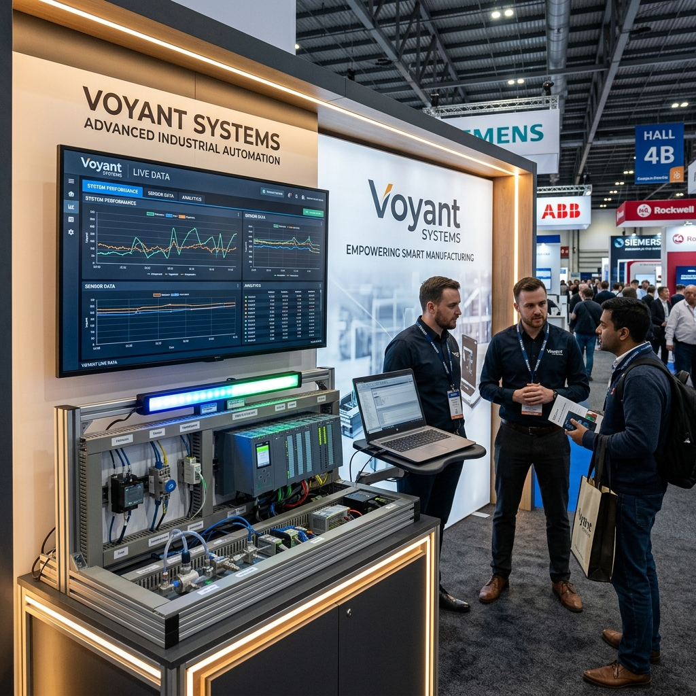

Plant-floor data, wired into decisions.
Voyant Systems builds industrial IoT and automation setups that connect machines, sensors, PLCs, and dashboards without forcing a full platform overhaul.

Practical monitoring for real production lines
The work starts with the equipment you already have: signals, sensors, PLC registers, operator workflows, and the data your team actually needs to see.
Real-Time Data Acquisition
Pull usable runtime, temperature, vibration, cycle, and status data from existing machines and new sensor points.
Custom Plant Automation
Design data logging, relay panels, signal conditioning, and wiring layouts around the physical limits of your line.
Process Visibility
Put machine state, alerts, trends, and thresholds into dashboards that supervisors can read at a glance.
Built close to the machine
Voyant works across the electrical, firmware, data, and web layers so the final system reflects the reality of the shop floor.
-
01
Embedded Controllers and Firmware
Microcontroller and edge-node firmware for stable sampling, local buffering, and equipment-side control loops.
-
02
Sensor and PLC Integration
Thermal probes, vibration sensors, relay signals, Modbus RTU links, and PLC registers mapped into clean data streams.
-
03
Operator Dashboards
Browser-based screens for live parameters, alerts, historical trends, and simple configuration.
Designed for manufacturers in and around Pune
Displayed at TLC Expo 2026, Auto Cluster Exhibition Centre, Chinchwad.
Voyant Systems focuses on hardware-linked monitoring and automation, not abstract dashboards detached from the line.
Projects move from floor study to panel, firmware, integration, and dashboard work with the internal maintenance and production teams kept in the loop.
Have a machine or line worth instrumenting?
Share the equipment, signals, and production problem. We will map a realistic monitoring or automation approach around it.